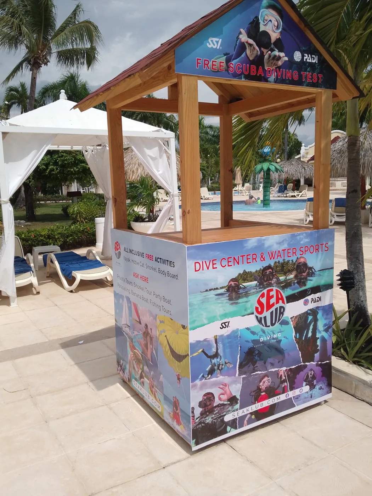
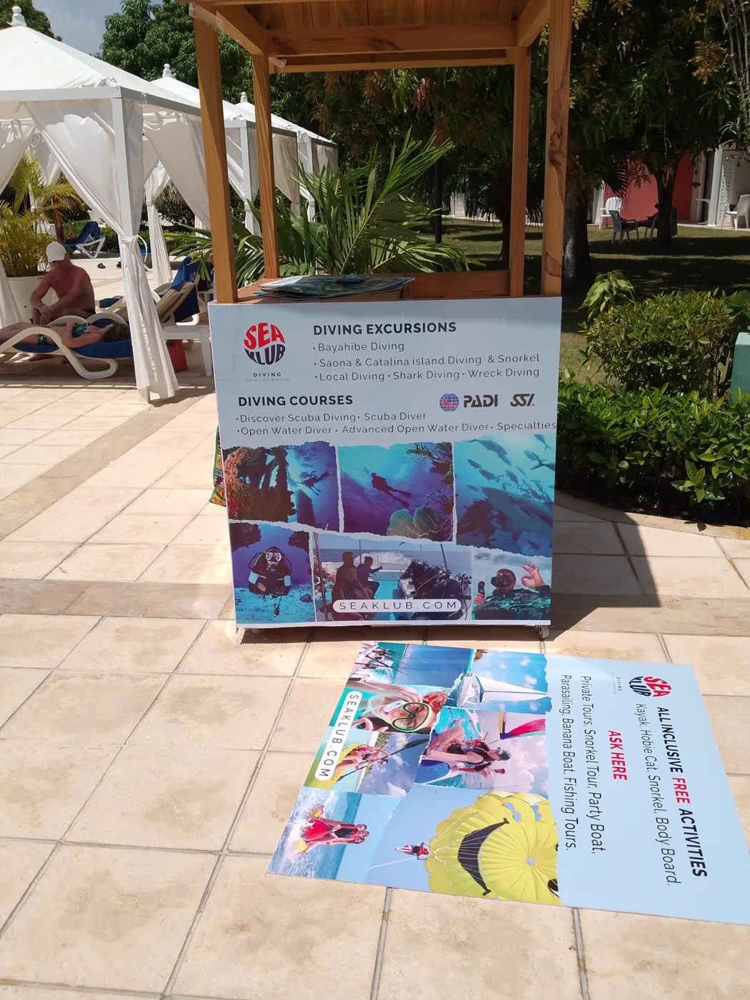

Trabajos realizados
Rotulación de quiosco turístico
Gráfica aplicada al punto de atención. La estructura de madera fue realizada por otro taller.


Empecemos por tu idea
Cuéntanos qué necesitas fabricar.
Una referencia, unas medidas o una idea son un buen comienzo.